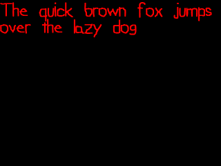
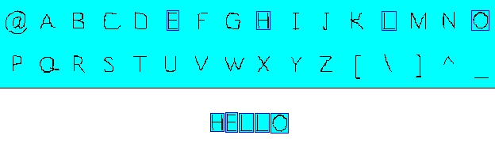
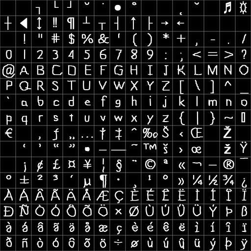
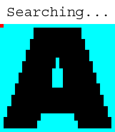
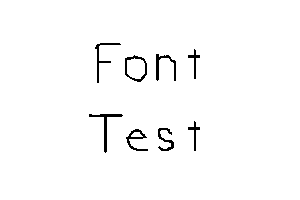

Bitmap Fonts

Last Updated 8/09/12
OpenGL has no built in functions to render text. Fortunately, we use a sprite sheet to render text images.
A bitmap font is simply a specialized sprite sheet.
If we wanted to make "HELLO" show on the screen we would have these sprites:
Now that you know the basic concept, it's time to make a bitmap fonting engine.
If we wanted to make "HELLO" show on the screen we would have these sprites:

Then we would take the "H" sprite, the "E" sprite, two of the "L" sprite, and finally the "O" sprite and show them on the screen one after the other.Now that you know the basic concept, it's time to make a bitmap fonting engine.
From LSpriteSheet.h
#include "LTexture.h"
#include "LVertexData2D.h"
#include <vector>
//Sprite drawing origin
enum LSpriteOrigin
{
LSPRITE_ORIGIN_CENTER,
LSPRITE_ORIGIN_TOP_LEFT,
LSPRITE_ORIGIN_BOTTOM_LEFT,
LSPRITE_ORIGIN_TOP_RIGHT,
LSPRITE_ORIGIN_BOTTOM_RIGHT
};
Before we create our bitmap font, we're going to add a new feature to the LSpriteSheet class. In the previous tutorial, it had the textured quad render from the center. For the
bitmap we want to render each character sprite from the top left. So we're going to add the capability to choose the origin for the sprites.
From LSpriteSheet.h
bool generateDataBuffer( LSpriteOrigin origin = LSPRITE_ORIGIN_CENTER );
/*
Pre Condition:
-A loaded base LTexture
-Clipping rectangles in clip array
Post Condition:
-Generates VBO and IBO to render sprites with
-Sets given origin for each sprite
-Returns true on success
-Reports to console is an error occured
Side Effects:
-Member buffers are bound
*/
For the LSpriteSheet class, selecting the origin is only going to affect how the vertex data is generated.
As you can see, the default behavior for generating sprites is to have the origin be at the center of the sprite. This is what I personally experienced as being the most useful way to have them rendered.
As you can see, the default behavior for generating sprites is to have the origin be at the center of the sprite. This is what I personally experienced as being the most useful way to have them rendered.
From LSpriteSheet.cpp
bool LSpriteSheet::generateDataBuffer( LSpriteOrigin origin )
{
//If there is a texture loaded and clips to make vertex data from
if( getTextureID() != 0 && mClips.size() > 0 )
{
//Allocate vertex data
int totalSprites = mClips.size();
LVertexData2D* vertexData = new LVertexData2D[ totalSprites * 4 ];
mIndexBuffers = new GLuint[ totalSprites ];
//Allocate vertex data buffer name
glGenBuffers( 1, &mVertexDataBuffer );
//Allocate index buffers names
glGenBuffers( totalSprites, mIndexBuffers );
//Go through clips
GLfloat tW = textureWidth();
GLfloat tH = textureHeight();
GLuint spriteIndices[ 4 ] = { 0, 0, 0, 0 };
//Origin variables
GLfloat vTop = 0.f;
GLfloat vBottom = 0.f;
GLfloat vLeft = 0.f;
GLfloat vRight = 0.f;
At the top of the generateDataBuffer() function, we generate the VBO and IBO data like before and get ready to parse the clipping rectanges.
This time we have some additional variables to set the vertex top/bottom/left/right.
This time we have some additional variables to set the vertex top/bottom/left/right.
From LSpriteSheet.cpp
for( int i = 0; i < totalSprites; ++i )
{
//Initialize indices
spriteIndices[ 0 ] = i * 4 + 0;
spriteIndices[ 1 ] = i * 4 + 1;
spriteIndices[ 2 ] = i * 4 + 2;
spriteIndices[ 3 ] = i * 4 + 3;
//Set origin
switch( origin )
{
case LSPRITE_ORIGIN_TOP_LEFT:
vTop = 0.f;
vBottom = mClips[ i ].h;
vLeft = 0.f;
vRight = mClips[ i ].w;
break;
case LSPRITE_ORIGIN_TOP_RIGHT:
vTop = 0.f;
vBottom = mClips[ i ].h;
vLeft = -mClips[ i ].w;
vRight = 0.f;
break;
case LSPRITE_ORIGIN_BOTTOM_LEFT:
vTop = -mClips[ i ].h;
vBottom = 0.f;
vLeft = 0.f;
vRight = mClips[ i ].w;
break;
case LSPRITE_ORIGIN_BOTTOM_RIGHT:
vTop = -mClips[ i ].h;
vBottom = 0.f;
vLeft = -mClips[ i ].w;
vRight = 0.f;
break;
//Also for LSPRITE_ORIGIN_CENTER
default:
vTop = -mClips[ i ].h / 2.f;
vBottom = mClips[ i ].h / 2.f;
vLeft = -mClips[ i ].w / 2.f;
vRight = mClips[ i ].w / 2.f;
break;
}
After setting our indices, we calculate the top/bottom y offsets and the left/right x offsets for the vertex data. As you can see, this depends on which origin we pick.
From LSpriteSheet.cpp
//Top left
vertexData[ spriteIndices[ 0 ] ].position.x = vLeft;
vertexData[ spriteIndices[ 0 ] ].position.y = vTop;
vertexData[ spriteIndices[ 0 ] ].texCoord.s = (mClips[ i ].x) / tW;
vertexData[ spriteIndices[ 0 ] ].texCoord.t = (mClips[ i ].y) / tH;
//Top right
vertexData[ spriteIndices[ 1 ] ].position.x = vRight;
vertexData[ spriteIndices[ 1 ] ].position.y = vTop;
vertexData[ spriteIndices[ 1 ] ].texCoord.s = (mClips[ i ].x + mClips[ i ].w) / tW;
vertexData[ spriteIndices[ 1 ] ].texCoord.t = (mClips[ i ].y) / tH;
//Bottom right
vertexData[ spriteIndices[ 2 ] ].position.x = vRight;
vertexData[ spriteIndices[ 2 ] ].position.y = vBottom;
vertexData[ spriteIndices[ 2 ] ].texCoord.s = (mClips[ i ].x + mClips[ i ].w) / tW;
vertexData[ spriteIndices[ 2 ] ].texCoord.t = (mClips[ i ].y + mClips[ i ].h) / tH;
//Bottom left
vertexData[ spriteIndices[ 3 ] ].position.x = vLeft;
vertexData[ spriteIndices[ 3 ] ].position.y = vBottom;
vertexData[ spriteIndices[ 3 ] ].texCoord.s = (mClips[ i ].x) / tW;
vertexData[ spriteIndices[ 3 ] ].texCoord.t = (mClips[ i ].y + mClips[ i ].h) / tH;
//Bind sprite index buffer data
glBindBuffer( GL_ELEMENT_ARRAY_BUFFER, mIndexBuffers[ i ] );
glBufferData( GL_ELEMENT_ARRAY_BUFFER, 4 * sizeof(GLuint), spriteIndices, GL_STATIC_DRAW );
}
Next we set our vertex/texture coordinates and index buffer per sprite like we did before. Notice how the texture coordinates didn't change. We're still mapping the same
portion of the texture no matter what our origin is. What's changing is how we place the vertex positions when rendering.
From LSpriteSheet.cpp
//Bind vertex data
glBindBuffer( GL_ARRAY_BUFFER, mVertexDataBuffer );
glBufferData( GL_ARRAY_BUFFER, totalSprites * 4 * sizeof(LVertexData2D), vertexData, GL_STATIC_DRAW );
//Deallocate vertex data
delete[] vertexData;
}
//No clips
else
{
if( getTextureID() == 0 )
{
printf( "No texture to render with!\n" );
}
if( mClips.size() <= 0 )
{
printf( "No clips to generate vertex data from!\n" );
}
return false;
}
return true;
}
Finally, we finish generating our VBO and report any errors if we need to.
From LFont.h
#include "LSpriteSheet.h"
class LFont : private LSpriteSheet
{
public:
LFont();
/*
Pre Condition:
-None
Post Condition:
-Initializes spacing variables
Side Effects:
-None
*/
~LFont();
/*
Pre Condition:
-None
Post Condition:
-Frees font
Side Effects:
-None
*/
bool loadBitmap( std::string path );
/*
Pre Condition:
-None
Post Condition:
-Loads bitmap font
-Returns true on success
-Reports errors to console
Side Effects:
-None
*/
void freeFont();
/*
Pre Condition:
-None
Post Condition:
-Deallocates texture and sprite sheet data
Side Effects:
-None
*/
void renderText( GLfloat x, GLfloat y, std::string text );
/*
Pre Condition:
-A loaded font
Post Condition:
-Renders text
Side Effects:
-Binds member texture and data buffers
*/
private:
//Spacing variables
GLfloat mSpace;
GLfloat mLineHeight;
GLfloat mNewLine;
};
With the LSpriteSheet class augmented, let's go over the LFont class. This class inherits from LSpriteSheet (because a bitmap font is a sprite sheet) privately because we don't
want anybody messing with the sprite sheet internals.
First we have our usual constructor/destructor. Then we have loadBitmap() which loads an image to parse it for text sprites and turn it into a texture. freeFont() deallocates the font, and renderText() renders text with the font.
Our spacing variables include "mSpace" which controls how much to move when a ' ' is encountered, "mLineHeight" is the distance between the highest text pixel and the lowest text pixel, and "mNewLine" is how much to move downward when a '\n' is encountered in a string.
First we have our usual constructor/destructor. Then we have loadBitmap() which loads an image to parse it for text sprites and turn it into a texture. freeFont() deallocates the font, and renderText() renders text with the font.
Our spacing variables include "mSpace" which controls how much to move when a ' ' is encountered, "mLineHeight" is the distance between the highest text pixel and the lowest text pixel, and "mNewLine" is how much to move downward when a '\n' is encountered in a string.
From LFont.cpp
#include "LFont.h"
LFont::LFont()
{
mSpace = 0.f;
mLineHeight = 0.f;
mNewLine = 0.f;
}
LFont::~LFont()
{
//Deallocate font
freeFont();
}
I'm sure you can figure out what the constructor and destructor do.
From LFont.cpp
bool LFont::loadBitmap( std::string path )
{
//Loading flag
bool success = true;
//Background pixel
const GLuint BLACK_PIXEL = 0xFF000000;
//Get rid of the font if it exists
freeFont();
//Image pixels loaded
if( loadPixelsFromFile( path ) )
{
An important thing to note is that the loadBitmap() function expects a path to a bitmap font image that only has black, white and shades of grey which black being the background
color. Any other type of bitmap font won't work with this parser. Fortunately these types of bitmap fonts are pretty standard.
First we want to deallocate any previously loaded fonts. Then we load the bitmap font's pixels so we can start parsing them.
First we want to deallocate any previously loaded fonts. Then we load the bitmap font's pixels so we can start parsing them.
From LFont.cpp
//Get cell dimensions
GLfloat cellW = imageWidth() / 16.f;
GLfloat cellH = imageHeight() / 16.f;
//Get letter top and bottom
GLuint top = cellH;
GLuint bottom = 0;
GLuint aBottom = 0;
//Current pixel coordinates
int pX = 0;
int pY = 0;
//Base cell offsets
int bX = 0;
int bY = 0;
//Begin parsing bitmap font
GLuint currentChar = 0;
LFRect nextClip = { 0.f, 0.f, cellW, cellH };
//Go through cell rows
for( unsigned int rows = 0; rows < 16; rows++ )
{
//Go through each cell column in the row
for( unsigned int cols = 0; cols < 16; cols++ )
{
Our bitmap font parser also assumes we have our character sprites arranged in a 16x16 grid in ASCII order (gridlines are superimposed, not in the actual file):
First thing we do after loading the pixels is divide the image width/height by 16 so we know what the dimensions are for each individual cell on the grid. Then we have the variables "top", "bottom", and "aBottom" which we'll use to calculate our spacing variables.
Since we're going to be going through the pixels of the bitmap, we have "pX"/"pY" for pixel coordinates. "bX"/"bY" are used to keep track of the pixel coordinates for the cell we are currently parsing.
"currentChar" keeps track of the ASCII value for the current cell we're parsing, and "nextClip" is the clipping rectanges for the character sprite we're currently parsing.
With all this ready, it's time to go through the cells row by row and column by column.

First thing we do after loading the pixels is divide the image width/height by 16 so we know what the dimensions are for each individual cell on the grid. Then we have the variables "top", "bottom", and "aBottom" which we'll use to calculate our spacing variables.
Since we're going to be going through the pixels of the bitmap, we have "pX"/"pY" for pixel coordinates. "bX"/"bY" are used to keep track of the pixel coordinates for the cell we are currently parsing.
"currentChar" keeps track of the ASCII value for the current cell we're parsing, and "nextClip" is the clipping rectanges for the character sprite we're currently parsing.
With all this ready, it's time to go through the cells row by row and column by column.
From LFont.cpp
//Begin cell parsing
//Set base offsets
bX = cellW * cols;
bY = cellH * rows;
//Initialize clip
nextClip.x = cellW * cols;
nextClip.y = cellH * rows;
nextClip.w = cellW;
nextClip.h = cellH;
Before we start going through the cell pixels, we calculate the base pixel offsets for the cell and initialize the next clipping rectangle to be the whole cell.
From LFont.cpp
//Find left side of character
for( int pCol = 0; pCol < cellW; ++pCol )
{
for( int pRow = 0; pRow < cellH; ++pRow )
{
//Set pixel offset
pX = bX + pCol;
pY = bY + pRow;
//Non-background pixel found
if( getPixel32( pX, pY ) != BLACK_PIXEL )
{
//Set sprite's x offset
nextClip.x = pX;
//Break the loops
pCol = cellW;
pRow = cellH;
}
}
}
What we're doing here is going through the cell pixel column by column and row by row until we find the first pixel that isn't a background pixel:
When that pixel is found, we know we found the x offset for the character sprite.
When constructing your bitmap fonts, remember that the pixel values have to be exact. A background pixel value of R000G000B001 may look black to the naked eye, but the parser will think it's part of the character sprite.

When that pixel is found, we know we found the x offset for the character sprite.
When constructing your bitmap fonts, remember that the pixel values have to be exact. A background pixel value of R000G000B001 may look black to the naked eye, but the parser will think it's part of the character sprite.
From LFont.cpp
//Right side
for( int pCol_w = cellW - 1; pCol_w >= 0; --pCol_w )
{
for( int pRow_w = 0; pRow_w < cellH; ++pRow_w )
{
//Set pixel offset
pX = bX + pCol_w;
pY = bY + pRow_w;
//Non-background pixel found
if( getPixel32( pX, pY ) != BLACK_PIXEL )
{
//Set sprite's width
nextClip.w = ( pX - nextClip.x ) + 1;
//Break the loops
pCol_w = -1;
pRow_w = cellH;
}
}
}
This time we start parsing the pixels from the right side of the cell to find the width of the sprite.
From LFont.cpp
//Find Top
for( int pRow = 0; pRow < cellH; ++pRow )
{
for( int pCol = 0; pCol < cellW; ++pCol )
{
//Set pixel offset
pX = bX + pCol;
pY = bY + pRow;
//Non-background pixel found
if( getPixel32( pX, pY ) != BLACK_PIXEL )
{
//New Top Found
if( pRow < top )
{
top = pRow;
}
//Break the loops
pCol = cellW;
pRow = cellH;
}
}
}
When searching for the top of cell we do something a little different. For each character sprite, there's a gap between the top of the cell and the actual sprite:
We want to minimize the wasted space, but we also want our clipping rectangles to be of uniform height. If they weren't, they'd render randomly shifted up and down. So what we're going to do in this implementation is find the tallest sprite and use that are the base y offset for all of the character sprites.
We want to minimize the wasted space, but we also want our clipping rectangles to be of uniform height. If they weren't, they'd render randomly shifted up and down. So what we're going to do in this implementation is find the tallest sprite and use that are the base y offset for all of the character sprites.
From LFont.cpp
//Find Bottom
for( int pRow_b = cellH - 1; pRow_b >= 0; pRow_b-- )
{
for( int pCol_b = 0; pCol_b < cellW; pCol_b++ )
{
//Set pixel offset
pX = bX + pCol_b;
pY = bY + pRow_b;
//Non-background pixel found
if( getPixel32( pX, pY ) != BLACK_PIXEL )
{
//Set BaseLine
if( currentChar == 'A' )
{
aBottom = pRow_b;
}
//New bottom Found
if( pRow_b > bottom )
{
bottom = pRow_b;
}
//Break the loops
pCol_b = cellW;
pRow_b = -1;
}
}
}
Here we're finding the lowest point of the character sprites. By finding the lowest pixel of all the sprites and finding the highest pixel for all the sprites, we can calculate
what's the maximum height needed to render one line of text. This is useful when rendering text.
We also make a point to store the bottom of the 'A' sprite. When text renders, it renders with a baseline and some characters like 'j' and 'g' go below that baseline:
We're going to use the bottom of 'A' as the baseline. You don't have to pick your baseline offset like this, but it's worked for me in the past.
We also make a point to store the bottom of the 'A' sprite. When text renders, it renders with a baseline and some characters like 'j' and 'g' go below that baseline:
We're going to use the bottom of 'A' as the baseline. You don't have to pick your baseline offset like this, but it's worked for me in the past.
From LFont.cpp
//Go to the next character
mClips.push_back( nextClip );
currentChar++;
}
}
After we're done parsing the current cell, we add the character sprite to our clip sprites. Then we increment the ASCII value and parse the next cell until all 256 cells have been
parsed.
From LFont.cpp
//Set Top
for( int t = 0; t < 256; ++t )
{
mClips[ t ].y += top;
mClips[ t ].h -= top;
}
After we're done parsing all the cells, we know what the top pixel point for all the character sprites are. Here we lop off the extra height from all the character sprites.
From LFont.cpp
//Blend
const int RED_BYTE = 1;
const int GREEN_BYTE = 1;
const int BLUE_BYTE = 2;
const int ALPHA_BYTE = 3;
//Go through pixels
const int PIXEL_COUNT = textureWidth() * textureHeight();
GLuint* pixels = getPixelData32();
for( int i = 0; i < PIXEL_COUNT; i++ )
{
//Get individual color components
GLubyte* colors = (GLubyte*)&pixels[ i ];
//White pixel shaded by transparency
colors[ ALPHA_BYTE ] = colors[ RED_BYTE ];
colors[ RED_BYTE ] = 0xFF;
colors[ GREEN_BYTE ] = 0xFF;
colors[ BLUE_BYTE ] = 0xFF;
}
A benefit of using OpenGL is that you can get hardware accelerated alpha blending to get smooth blended text:
What we can do is use the brightness of the pixel as it's alpha value. The darker the pixel, the more it blends into the background.
Because the bitmap font is greyscale, we can just take the red component as the brightness. Then for each pixel, we set it's RGB value to be white so the only thing shading it is it's transparency.

flat text
smooth text
flat text
smooth text
What we can do is use the brightness of the pixel as it's alpha value. The darker the pixel, the more it blends into the background.
Because the bitmap font is greyscale, we can just take the red component as the brightness. Then for each pixel, we set it's RGB value to be white so the only thing shading it is it's transparency.
From LFont.cpp
//Create texture from manipulated pixels
if( loadTextureFromPixels32() )
{
//Build vertex buffer from sprite sheet data
if( !generateDataBuffer( LSPRITE_ORIGIN_TOP_LEFT ) )
{
printf( "Unable to create vertex buffer for bitmap font!\n" );
success = false;
}
}
else
{
printf( "Unable to create texture from bitmap font pixels!\n" );
success = false;
}
After we're done parsing the pixels and calculating the clip rectangles, we generate the texture and VBO data.
From LFont.cpp
//Set texture wrap
glBindTexture( GL_TEXTURE_2D, getTextureID() );
glTexParameteri( GL_TEXTURE_2D, GL_TEXTURE_WRAP_S, GL_CLAMP_TO_BORDER );
glTexParameteri( GL_TEXTURE_2D, GL_TEXTURE_WRAP_T, GL_CLAMP_TO_BORDER );
//Set spacing variables
mSpace = cellW / 2;
mNewLine = aBottom - top;
mLineHeight = bottom - top;
}
else
{
printf( "Could not load bitmap font image: %s!\n", path.c_str() );
success = false;
}
return success;
}
Here we give the font texture a different texture wrap. "GL_CLAMP_TO_BORDER" will make sure that the character sprites at the edge of the texture don't wrap around and give
stray lines of pixels.
Lastly we want to calculate the spacing variables. "mSpace" is set be half the cell width. You don't have to set it this way but it's given me good results. "mNewline" is calculated as the space between the top pixel point and the baseline. Lastly, "mLineHeight" is the difference between the top pixel point and the lowest pixel point.
Finally, we can return the success of our function.
Lastly we want to calculate the spacing variables. "mSpace" is set be half the cell width. You don't have to set it this way but it's given me good results. "mNewline" is calculated as the space between the top pixel point and the baseline. Lastly, "mLineHeight" is the difference between the top pixel point and the lowest pixel point.
Finally, we can return the success of our function.
From LFont.cpp
void LFont::freeFont()
{
//Get rid of sprite sheet
freeTexture();
//Reinitialize spacing constants
mSpace = 0.f;
mLineHeight = 0.f;
mNewLine = 0.f;
}
The function freeFont() calls freeTexture and, because a LFont is a LSpriteSheet, it will call the LSpriteSheet implementation and deallocate the sprite sheet data too.
From LFont.cpp
void LFont::renderText( GLfloat x, GLfloat y, std::string text )
{
//If there is a texture to render from
if( getTextureID() != 0 )
{
//Draw positions
GLfloat dX = x;
GLfloat dY = y;
//Move to draw position
glTranslatef( x, y, 0.f );
//Set texture
glBindTexture( GL_TEXTURE_2D, getTextureID() );
//Enable vertex and texture coordinate arrays
glEnableClientState( GL_VERTEX_ARRAY );
glEnableClientState( GL_TEXTURE_COORD_ARRAY );
//Bind vertex data
glBindBuffer( GL_ARRAY_BUFFER, mVertexDataBuffer );
//Set texture coordinate data
glTexCoordPointer( 2, GL_FLOAT, sizeof(LVertexData2D), (GLvoid*) offsetof( LVertexData2D, texCoord ) );
//Set vertex data
glVertexPointer( 2, GL_FLOAT, sizeof(LVertexData2D), (GLvoid*) offsetof( LVertexData2D, position ) );
Here's our renderText() function which looks like a specialized version of the renderSprite() function from LSpriteSheet. After initializing the draw positions, we translate to
the rendering point, bind the texture, and set the VBO data.
One of the benefits of using the LFont is that you can bind the texture once and render multiple times with it. Binding textures in OpenGL is an expensive operation and you should try to get the most out of your texture binding and avoid constantly swapping textures around in VRAM.
One of the benefits of using the LFont is that you can bind the texture once and render multiple times with it. Binding textures in OpenGL is an expensive operation and you should try to get the most out of your texture binding and avoid constantly swapping textures around in VRAM.
From LFont.cpp
//Go through string
for( int i = 0; i < text.length(); ++i )
{
//Space
if( text[ i ] == ' ' )
{
glTranslatef( mSpace, 0.f, 0.f );
dX += mSpace;
}
//Newline
else if( text[ i ] == '\n' )
{
glTranslatef( x - dX, mNewLine, 0.f );
dY += mNewLine;
dX += x - dX;
}
//Character
else
{
//Get ASCII
GLuint ascii = (unsigned char)text[ i ];
//Draw quad using vertex data and index data
glBindBuffer( GL_ELEMENT_ARRAY_BUFFER, mIndexBuffers[ ascii ] );
glDrawElements( GL_QUADS, 4, GL_UNSIGNED_INT, NULL );
//Move over
glTranslatef( mClips[ ascii ].w, 0.f, 0.f );
dX += mClips[ ascii ].w;
}
}
//Disable vertex and texture coordinate arrays
glDisableClientState( GL_TEXTURE_COORD_ARRAY );
glDisableClientState( GL_VERTEX_ARRAY );
}
}
Here's our for loop that goes through the string and renders character sprites.
There are two special cases. If we have a space, there's no image to render so we just translate over and shift the rendering point. If we have a newline we translate back to the base x offset, translate down one newline, and update the render point.
If we have an actual character sprite to draw, we get its ASCII value and bind the character sprite's IBO so we can render with it. Then we translate past the character sprite so we can render the next character until there are no more characters.
There are two special cases. If we have a space, there's no image to render so we just translate over and shift the rendering point. If we have a newline we translate back to the base x offset, translate down one newline, and update the render point.
If we have an actual character sprite to draw, we get its ASCII value and bind the character sprite's IBO so we can render with it. Then we translate past the character sprite so we can render the next character until there are no more characters.
From LUtil.cpp
bool loadMedia()
{
//Load Font
if( !gFont.loadBitmap( "20_bitmap_fonts/lazy_font.png" ) )
{
printf( "Unable to load bitmap font!\n" );
return false;
}
return true;
}
In loadMedia(), we load our bitmap font.
From LUtil.cpp
void render()
{
//Clear color buffer
glClear( GL_COLOR_BUFFER_BIT );
glLoadIdentity();
//Render red text
glColor3f( 1.f, 0.f, 0.f );
gFont.renderText( 0.f, 0.f, "The quick brown fox jumps\nover the lazy dog" );
//Update screen
glutSwapBuffers();
}
And in render(), we render our text.
Using, glColor() we can give our text color when rendering it.
Using, glColor() we can give our text color when rendering it.